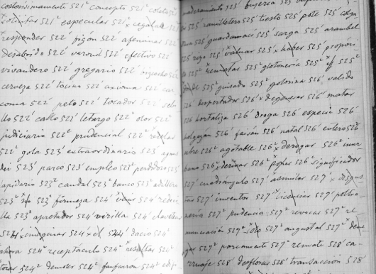

Valera, Juan. Famoso escritor español cuyas obras fueron citadas por Cuervo en sus diferentes trabajos y con quien en alguna ocasión sostuvo una áspera polémica. Valera escribió en sus Cartas americanas: “Imposible me parece que… le sobrasen a Cuervo tiempo y medios para leer, conocer a fondo y poder citar todo libro escrito en castellano, desde la formación del lenguaje hasta ahora”.
Verdadero santo. El confesor de Cuervo en París, Manuel Fernández de Barrena, en sus cartas a Menéndez Pelayo, viene a ser un testigo de primer orden en este aspecto de la vida del sabio. En 1908 escribe a don Marcelino, refiriéndose a Cuervo: “¡Qué hombre, qué bondad, qué modestia [… ]! En su vida privada un verdadero santo, que diariamente ayuda a misa en la parroquia”[1]. Y en julio de 1911 le escribe: “El primer filólogo de nuestra raza’ como V. lo escribió. Se está muriendo [… ]. Es un verdadero santo, que pone la virtud cien mil millones de codos más alta que la ciencia [… ]. Desde el 14 del mes último no ha salido de casa, y allí encerrado sufre mucho de no comulgar todos los días. Yo quiero darle ese gusto, pero como Don Rufino es por extremo delicado, y vive lejos de donde yo vivo, no hay manera de lograr que acepte mi ofrecimiento. Lo acepta sólo de cuando en cuando, y entonces voy allá muy de madrugada y se confiesa y comulga; por supuesto vestido y arrodillado como en una iglesia. Le aseguro a V. que en todo eso y por el modo como lo hace, me edifica extraordinariamente y aun me impone”[2]. Si bien, en estilo festivo, el escritor Fernando Vallejo ha canonizado a don Rufino, monseñor Romero muy en serio anhelaba que su nombre estuviera en los altares.
Viaje a Europa. En vista del éxito que tuvo la Cerveza de Cuervo,pagadas todas las deudas, pudieron Ángel y Rufino realizar el ansiado viaje a Europa, con el ánimo de asistir a la Exposición de París del año de 1878. Viajaron, además, por distintos países y Ángel fue consignando en un diario las impresiones de viaje. Rufino José no es un turista entusiasta, le faltan sus libros, no le gusta lo superficial, lo efímero. A pesar de tratar de seguir el consejo de Uricoechea: “viaje, aprenda, diviértase, que bien lo merece, y viva lo más contento que pueda”[3]. Rufino no se adapta al estilo de vida europeo y nuevamente en carta a Caro confiesa: “No he podido cogerle el hilo a la vida europea, y francamente creo perdido todo el tiempo que estoy correteando por aquí. Los amigos deben hacer cuenta que me he ido a mudar de aire a Usme, y aun creo que allí pudiera aprender más, o siquiera estudiar más… La calidad de viajero lo hace a uno ver lo más serio en calidad de títeres; nada conozco más desagradable que ir al Museo Británico y tener que pasar de largo por delante de cosas que exigirían algunos buenos días de estudio, y luego estarse un buen rato mirando en otra parte a las pulgas tirando cochecitos”[4]. Los países europeos visitados más o menos detenidamente fueron en orden cronológico: Francia, Gran Bretaña (Inglaterra, Escocia), Holanda, Bélgica y –después de una breve pausa en París– Alemania, Dinamarca, Suecia, Finlandia, Rusia, Polonia, Austria, Hungría, Rumania, Bulgaria, Turquía, Grecia, Italia y España. Organizaron la gira de tal manera que, en cuanto a las temporadas, evitaron tanto el frío extremo del norte como el calor extremo del sur.
«Vida de Rufino Cuervo y noticias de su época». Para José J. Ortega Torres “Uno de los más bellos libros de historia que se han escrito entre nosotros, a la vez que de los más desconocidos en este tiempo, es la Vida de Rufino Cuervo y noticias de su época, por los hermanos Cuervo Urisarri, Ángel y Rufino José. En el capítulo diez y siete, que es una joya, se leen los párrafos siguientes, que sustituyen con creces mi descolorida prosa, y son una lección pedagógica de alto ejemplo, a la par que una hermosa pintura de las costumbres de nuestros mayores: «Fecundando la laboriosidad con un espíritu de orden que era ingénito en él, logró el doctor Cuervo allegar un modesto caudal. Tan distante del despilfarro como de la miseria, sabía cumplir con las exigencias de su posición social y facilitar a su familia los goces que son asequibles en una ciudad como Bogotá. Haciendo caso omiso de que apenas había empresa útil y patriótica que él no fuera uno de los primeros a apoyar, y de que la desgracia y la pobreza hallaron siempre en su casa manos prontas a su alivio y socorro, diremos que convirtió sus esfuerzos, casi con prodigalidad, a la educación de sus hijos. A Luis, el mayor, le proporcionó en Inglaterra modo de seguir la carrera comercial; Antonio siguió la del Foro; y a todos, desde la niñez, infundió amor al estudio y al saber»”[5].
Vida política. Dice Cuervo en la introducción a Cómo se evapora un ejército: “Nuestra vida política ha llegado a ser poco menos que de salvajes: tal se figura uno de tribus que se disputan el terreno en que las confinó la naturaleza; el vencedor niega al vencido el fuego y el agua; el vencido espía un descuido de su dominador para derribarle, o aguarda que un agraviado se lo entregue por traición; entre tanto el campo no se siembra, y el hambre acabará con los dos. Probado por la experiencia que los que apellidan libertad no han sabido hacerla efectiva, y los que claman autoridad no han logrado hacerla respetable, dudo que hombre alguno honrado y sensato pueda conservar fe en programas que no han producido sino escombros, ni menos seguir adorando ídolos que no han dado el triunfo a los partidos sino corrompiéndolos y degradándolos. No habrá llegado el caso de comenzar de nuevo, como en 1832, una reacción vigorosa de patriotismo, modestia, desinterés y decoro? Envidiable sería la gloria del hombre público que convocara para cumplir ese programa a todos los ciudadanos honrados, que por dicha aún los hay, persuadiéndoles que en torno de la madre agonizante acallan los buenos hijos mezquinas disensiones. Solo así cabe abrigar la esperanza de que algún día gocemos todos de libertad bajo un gobierno justo. ¡Ah! pero estos son sueños, y los sueños… ”[6].
Vinagre, precursor de la cerveza. A la muerte del padre, el patrimonio familiar de los Cuervo se vino a menos. Según lo narra don Rufino con ejemplar sencillez, en su casa “muchos días no se contaba en ella para comer, sino con la miseria que producía la venta de algunas botellas de vinagre que hacía nuestra madre, y él mismo [Ángel Cuervo] se vio varias veces imposibilitado de salir, por carecer de ropa decente”[7]. Ese vinagre, esa pobreza, inspiraron a los jóvenes la idea de una fábrica de cerveza, industria casi desconocida entonces en Bogotá, y se dieron a ponerla en práctica, con todo entusiasmo y empeño.
Visita a August Pott. Una de las gratas reminiscencias de su primer viaje a Europa la narra así en carta a M. A. Caro: “En Halle le hice una visita a Pott, viejo muy amable, que me obligó a hacerle la tertulia en latín; ya usted se figurará qué apuros para quien lleva ocho años de no ejercitarse en eso. Me contó que trabajaba una obra sobre el simbolismo de los sonidos en el lenguaje, y me explicó algunos de los puntos, cosa muy curiosa, pero que necesitará quien la comente. Para consuelo de usted le diré que estaba de trasteo, y los libros andaban por el suelo; por ese motivo no había asistido al congreso susodicho”[8].
Voz de Cuervo. En carta de Belisario Peña a Cuervo advertimos esta solicitud: “Hoy le escribo para importunarle con dos peticiones: la primera es que se digne prestarse para que el señor Vicente Urrutia haga tomar la voz de Ud., en un fonógrafo pequeño que le pido con ese objeto especial: la segunda que me permita, si fuere posible sin inconveniente ninguno, hacer reproducir, en un periódico que van a fundar los jóvenes de la Universidad, su precioso tratado de El castellano en América. Perdóneme mis impertinencias, hijas del cariño que le profeso, que es el que me mueve a desear oír siquiera su voz antes de morirme, que, según estoy, no tardará mucho”[9]. La respuesta no se hizo esperar en carta de Cuervo a Peña: “Varias veces he tenido el gusto de verme con el Sr. Urrutia, cuyas prendas me han encantado; solo siento el no haber podido servirle de nada, a pesar de que con toda sinceridad me he puesto a sus órdenes. Antes de ayer fuimos a la fábrica de fonógrafos, y pronuncié unas pocas palabras dirigidas a U.; me limité a unas pocas, porque si hubiera dicho todo lo que me ocurriera, fuera cosa de nunca acabar. Estaba yo un poco acatarrado y como había que alzar algo la voz, tuve que interrumpir unos momentos. U., lo notará y también la incongruencia de los conceptos. Este deseo de U., me ha conmovido el alma, pues es la prueba del más acendrado cariño: ¿qué podría yo decir hablando alto y en presencia de otros, que descubriera todo lo que sentía mi corazón? Gracias, mil gracias”[10]. Tras largas pesquisas, el Instituto Caro y Cuervo logró dar con el paradero del cilindro que registró la voz de Cuervo y recuperar este breve testimonio de su esencia y de su vida para las nuevas generaciones. Hoy no nos parece nada extraño el registro de la voz, pero hace cien años apenas si se daban los primeros pasos en este sentido.
* * *
[1] Menéndez Pelayo, 1989, xix, 397.
[2] Menéndez Pelayo, 1989, xxi, 424.
[3] aec, x, 216.
[4] aec, xiii, 11-12.
[5] Anuario, xi, 189.
[6] Cuervo, Obras, 1987, iv, 790.
[7] Anuario, xi, 192.
[8] aec, xiii, 24.
[9] aec, iv, 122.
[10] aec, iv, 4, 124.
